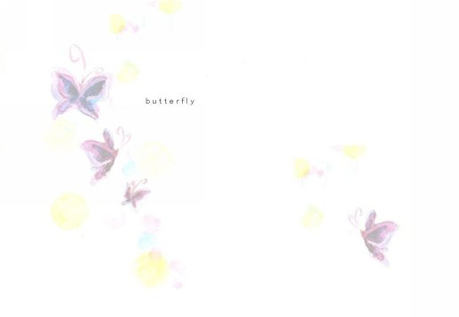

| butterfly: ひらひら、ひらり (ライトノベル) | |
| pansy | |
| (2018) | |
１

「何処に行くの？」
そう聞くと、何処でもないわ、と彼女は答えた。
酷く淋しそうな小さな背中を、猫のように丸めて靴ひもを結んでいるところだった。
「そう」
白いスニーカーの上に赤い靴紐が手の動きに沿って揺れて、薄く桃色の影を作る。靴紐より、彼女の指先より、私は影の動きのほうが気になって視線をずらせないでいた。
靴ひもは、片方はもう結び終わっていた。
それは、お世辞にもきれいな蝶々結びと言えるものではなく、申し訳程度にななめに傾いてしまっていた。
彼女らしい。ふと、そう思った。
彼女は何度教えても正しい蝶々結びを覚えようとしなかった。その度に、私は困ったように「どうして出来ないのよ」とからかい混じりに非難していた。彼女はそんなことを全く気にも留めようともしなかった。直そうともせず、
「だって、こうやって結んであったら、私が結んだってすぐに分かるでしょう？ それに、すぐにみよちゃんが結び直してくれるでしょう？」
そういって無邪気に笑った彼女の顔を思い出す。
目を細めて、本当にうれしそうに、楽しそうに笑う彼女。眉をハの字型に下げて、薄い色素の目を細めて笑う。頬を少しだけ紅潮させて、いたずらっ子のように笑っていた。
そして、やっぱり私は彼女の結んだ蝶々結びを見つける度に、彼女の予言どおりに直してあげるのだった。制服のリボン。スニーカー。お弁当袋。彼女が野原で蝶を追いかけるように、私は彼女の後を追いながら、彼女の結った縦結びの蝶々を追いかけているようだった。
思い出すと、急に胸が苦しくなった気がした。何かが喉に痞えているような、何かが心を塞いでしまっているような、そんな気がした。
あの頃から、何が変わっただろうか。変わってしまったことがあっただろうか。逆に、変わらないでいることなんて、出来ただろうか。
「まゆ」
呼びかけると彼女は手を止めて振り返った。
「なあに、みよちゃん」
薄茶色の柔らかい髪が遠心力に沿ってぐるりと宙を舞う。
その拍子にふわりとシャンプーの甘い匂いが香った。
甘い、フローラルの匂い。だけどそれは鼻に付くようなきつい甘さではなくて、ほんのりと香るような、優しい甘さの匂いだった。陽だまりと花畑を連想させるような、そんな匂い。
私も同じシャンプーを使っているはずだけれども、私からも同じ匂いがしているとは到底思えないほど、それは紛れもなく彼女の匂いだった。
その匂いに絆されて言葉を出すのを躊躇する。
ようやく口を吐いたのは想像していたよりも小さく、でも静まり返った空間に響かせるには十分すぎるほどの声だった。
「ほんとは蝶々結び、出来たんでしょう？」
彼女は、一瞬きょとんと目を丸くして、驚いた顔をした。それからすぐに、いらずらが見つかった子供のように舌を出して笑って見せた。
あの時とは違った笑顔。もしかしたら、あの時も心の中でこうやって舌を出して笑っていたのかもしれない。
からかうでもなく、悪気があるわけでもなく、ただ純粋なだけのいたずら。空言。嘘。
「だって、みよちゃんにこっち向いてほしかったんだもん」
もう片方の靴ひもをさっと結んで彼女は立ちあがった。
靴ひもは縦結びではなかった。左右正対照の、きれいな蝶々結び。彼女が初めて私に見せた、蝶々結びだった。ピンク色の影がまた揺れて、まるで二匹の蝶が踊っているみたいにも見えた。
彼女は私の考えなどお見通しでも言うように靴紐をわざと揺らして満足げに笑って見せた。私は驚いて、つい目を伏せてそのまま俯いてしまった。彼女が寂しそうに微笑んだのが空気で分かった。
彼女が立ちあがった拍子に埃が舞いあがって、きらきらと光った。
紺色のスカートを軽くはたいて埃をはらう。その彼女の仕草を私は何も考えていない頭でじっと見つめていた。
彼女はガチャリと玄関のドアを開けた。
「じゃあ、ね」
彼女は小さく手を振って、そのまま右足を外へ踏み出した。
スカートの裾がひらりと揺れて光の中へ吸い込まれていく。バタン、と重々しいドアの閉まる音が響いた。
取り残されたのは、私一人だった。
「ばいばい」
閉まったままのドアに向かって呟く。
返事はもちろんどこからも返っては来なかった。溜息をひとつ吐いて、私はその場にうずくまる。
泣くわけでもない。そんなつもりもない。でも、泣くことが出来たらいいのにとぼんやり思った。
彼女が何処へ行ったのか、私は知らない。
いつ帰ってくるのか、私は知らない。
なぜ行ってしまったのか、私は知らない。
どうして、私がここに居続けるのかも、私は知らない。
知っているのは、彼女の着ていた白いブラウス、夜色のスカート。赤いタイ。キャラメル色のふわふわの髪の鮮やかさと、蝶々結びの二匹の影。
それから、行ってしまった彼女とここに居続ける私の、違う形だけれど同じ色をした、ふたつの孤独の匂いだけだった。
２
夢を見た。
私がみよちゃんで、みよちゃんが私になった夢。
夢の中でみよちゃんは、私をおいて何処かへ行ってしまった。私はそれを当然のことのように見送っていた。
実際、私はみよちゃんが本当に出て行くと言うなら、きっと、縋って泣いてでも引き止めるのだろう。でも夢の中で私はそうしなかった。ただ、ああ、何処かへ行ってしまうのだと漠然と思っていただけだった。
もしかしたら、私がみよちゃんを見送る見送っていたのではなくてみよちゃんが私を見送る夢だったのかもしれない。夢の中で私は「私」自身じゃなくて、「みよちゃん」自身だったのかもしれない。胡蝶の夢の逸話のように。だから私は、あんなにも平然と別れの場に立っていることが出来て、泣くことも縋ることも、引き止めることもしないでいられたのかもしれない。
私と違ってみよちゃんは一人でも生きていける人だから。誰も括ろうとしないで、誰も気にも留めずに自分の思うままに生きていける人だから。
何もいらない、何も必要ないと全てを捨てられる人だから。
でも、私は違う。
欲しいものばかりで、でも失くすのがこわくて、手放すのが、手放されるのがこわくて動けずにいる。
みよちゃんのこころ。繋がり。今の居場所。全部。
欲しいと泣くことしかできないくせに、何一つ捨てられなくて駄々をこねる無力なだけの私。
夢の中で、蝶々結びが出来ないのは私の体を持ったみよちゃんだった。
でも、現実ではみよちゃんは綺麗に左右正対称の蝶々結びが出来る。
「だって、こうしていれば、判ってくれるでしょう？ みよちゃんが結び直してくれるでしょう？」
あの声は、私の声だった。
私がずっと昔にみよちゃんに言った言葉。少しでも気を引こうとついた、小さな嘘。みよちゃんはきっともう忘れてしまっているだろう。
でも、夢の中で、そう言ったのは幼い私じゃなくて「彼女」だった。
もしかしたら、みよちゃんは「私」自身なのかもしれない。
夢の中のみよちゃんの言葉、声は、あれが夢の中の話だとは到底割り切れそうになかった。
「どうして、」
呟いてみる。何が「どうして」なのか自分でもよく分からなかった。
どうして、私がみよちゃんだったの？
どうして、みよちゃんが私だったの？
どうして、あんなことを言ったりしたの？
そのくせに、どうして何処かへ行こうとするの？
どうして、･･････。
ぐるぐると分からないことばかりが頭の中をめぐって吐きそうになる。あまりの気持ち悪さに、寝起きのままのよれたシーツに顔をうずめる。夜の匂いがほんのりと残っていて、思わず泣き出しそうになった。
このまま泣いてしまえば楽になれるだろうか。泣けないくせに。思わず浮かんだ思いに、自嘲してみる。
ガチャ。
軽くドアの開く音がして、冷たい風が少しだけ室内に入ってきた。篭って淀んだ空気が引くのがわかる。おもわず毛布を手繰り寄せて、頭からかぶってもぐりこんだ。
「どうしたの？」
みよちゃんの声が上から聞こえた。毛布から頭だけを出すと、そこには予想通り、私の体ではなくて本当のみよちゃんの体を持ったみよちゃんが、丸いお盆を両手で持って立っていた。
安堵と違和感の両方を抱きながら溜息を吐いて頬を緩ませる。
よかった。どこかでそう思っている自分がここにいた。
「なんでもないよ。それは？」
みよちゃんの持ってきたお盆には、マグカップと袋入りのクッキーが載せられていた。みよちゃんは「ああ」と笑ってそれを私のほうへ差し出した。
「起きたかな、と思って、ホットミルク入れてきたの。飲むでしょう？」
こくりと頷いてホットミルクの入ったマグカップを受け取る。
白く湯気の立つみよちゃん特製のホットミルクは、ほんのりと砂糖の甘さがした。ミルクの匂いはシーツの匂いを覆ってしまった。
いつも、そう。どんなに私が悲しくても、寂しくても、みよちゃんはこうして私からそれを覆い隠してしまう。いつか、置いていくくせに。夢の中の出来事が頭から離れないで、少しだけ泣きそうになって慌ててホットミルクを一口含んだ。甘い。みよちゃんのこころみたいな味。それから、優しい匂い。
「クッキーも貰うね」
そう言って手を伸ばしかけて、そのまま手を止めた。
袋には、赤い、細いリボンが蝶々結びにしてかけてあった。
「･･････あ、」
蝶々結び。
「どうしたの？」
何も知らないみよちゃんは首をかしげてきょとんとした表情で私を見つめた。
「ううん、なんでもない。なんでもないの」
言い聞かせるように、自分にそう言い聞かせるように答えて、リボンに手をかけた。
３
朝の目覚めは、良いほうだ。
寝つきも悪くはないけれど、朝は特に、目覚ましがなくてもきっちりと決めた時間に目が覚める。目覚めない朝はほとんどない。
反対に、まゆは寝つきも寝起きも悪い。
幼い頃から眠れないと私の部屋に忍び込んできたり、怖い夢を見たと泣きながら駆け込んできたりしていた。
今でこそ一緒に寝ることはほとんどなくなったけれど、朝は私が起こさなければ一日中眠ったままなんじゃないだろうかと思うくらいに、一人では起きられない。
眠り姫みたい。
いつだったか、そんな風に思ったことがあった。
「まゆが眠り姫ならさしずめ私は王子ってとこ？ 悪くはないけど王子って柄じゃないしそもそも私だって女の子でいたいわ」
一人呟いて頭を振る。
綿菓子のようなふわふわの飴色の髪。閉じた目。長い睫毛。規則正しく寝息をつむぐ形のいい唇。わずかに上気した桃色の頬。
自分は、王子様には逆立ちしたって似合わないけれど、まゆは本当にお姫様にふさわしいと思う。
「双子のはずなのにどうしてこうもちがうのかしら、ね」
呟いて、溜息を吐く。
自分自身で発した言葉は誰にもずっと言われてきた言葉だった。
それは称賛だったり侮蔑だったりしたけれど、どちらにしても同じ言葉に違いはない。私からしたら、どちらも「私とまゆは違う」と認識させられる言葉でしかない。
寝起きのシーツを綺麗に剥がして、脱衣所まで抱えて洗濯機の中に押し込んだ。
朝、早く起きた後にすることは決まっている。
シーツを片した後、そのまま洗面台で顔を洗い、口をすすぐ。夜の匂いが残っているもの全てを流し落として朝を迎える。匂いも口に残ったわずかな味もシーツのしわも淀んだ空気も洗い流して入れ替えて、夜の気配を早く全部何処かへ捨て去ってしまいたかった。
鏡を見て、今日の自分の顔を確認する。いつもと同じ顔。いつもどおりの朝。それを確認するとようやく今日がはじまったと実感が沸いた。
いつものように昨日の夜から誰も足を踏み入れていないキッチンを入ると、朝の光が窓ガラスを通してシンクをきらきらと照らしていた。
この瞬間が、朝のうち一番好きだ。光を反射して輝くシンクを見ると、起き掛けの少しだけナイーブになった気分を忘れられる。キッチンに隣接したダイニングに目をやると、テーブルの上にまで窓から差し込んだ日の光が伸びて白い影を作っていた。
「まゆもたまには早起きすればいいのに。こんなに綺麗なの、見せてあげたいわ」
呟いて、冷蔵庫から、牛乳と小麦粉を取り出した。
今日は、彼と会う約束をしている。
彼とは去年の春から付き合っている。彼と会うときはいつもクッキーやパウンドケーキを焼く。彼が好きといってくれるのもあるけれど、本当は彼を口実にして自分自身が作りたいだけ、というのもある。お菓子作りなんて私に似合わないことは知っている。だから、こうやって彼が喜ぶ顔を見るため、なんて言い訳して、理由を作っては自分自身を庇ってしまう。
彼のことは、まゆはきっと知らない。
言ってないし、言うつもりもない。隠すつもりもないけれど、聞かれるまでは、言おうと思わない。彼にも、まゆのことは言っていない。母や父のことは話したけれど、まゆのことだけは何も言っていない。
どうしてだろう。どうしてだか分からないけれど、互いの存在を互いに知ってほしくない。これが独占欲とでも言うのだろうか。だとしたらどっちに対しての独占欲だろうか。彼に？ それともまゆに？
砂糖を戸棚から出して分量を量る。ボウルにふるった粉と砂糖と卵、バターを入れて混ぜ合わせた。混ぜていくうちにポロポロだった生地がだんだんと一つになっていく。バターの甘い匂いが鼻をくすぐる。
一つにまとまった生地を丸めてラップで包んで、冷蔵庫へ入れて寝かせる。三十分。その間にパンを焼いて、サラダを作って･･････なんて朝の支度の要領を考えた。今日のサラダはポテトサラダにしようか、マカロニも入れるべきかな、と戸棚にあるマカロニを確認する。お湯を一沸かししながらパンを二切れ切ってトースターに入れて、スイッチをひねる。
冷蔵庫から寝かせたクッキーの生地を取り出して打ち粉の上に伸ばしてハートの形で抜く。オーブンシートの上に並べてオーブンに入れると同時にトースターがチンと音を立てた。
パンの少しこげた香ばしい香りが部屋中に広がって、バターの匂いと混じっていつもの朝食の匂いがした。
サラダとトーストをテーブルに並べて、ほっと溜息を吐いた。それからすぐに、焼きあがったクッキーをオーブンから取り出して、袋に入れてラッピングをした。赤いリボンを結って口を閉じて、 「 for yo u 」と書いたシールをぺたりと貼った。あなたのために。日本語だとなんだか気恥ずかしい気がして絶対に言えないけれど、英語だとなんてことないラッピングの一部として素直に渡せるから不思議だ。そう思いながらついでにとまゆの分も袋に入れてリボンを結ぶだけの簡単なラッピングをした。
ぎしっ。二階でまゆが身じろぎしたような音がした。
起きたんだろうか。まゆが一人で起きるなんて珍しい。
何かあったんだろうか。夢でも見たんだろうか。何か、怖い夢でも。
胸に言いようのない違和感を抱きつつ、ホットミルクでも持っていってあげようと牛乳を鍋に入れ、火にかけた。
お気に入りのペアのマグカップにそろそろと白く湯気立つそれを注ぐと、お盆にまゆの分のクッキーも載せて階段を上った。
まゆの部屋のドアの前に立って気づいた。直感とか第六感というのだろうか。
まゆが泣いているような気がした。正しくは、まゆが泣いているのを感じた。双子、というのはどうしてこんなにも不都合なんだろう。ドア一枚隔てていても想いが伝わってしまうのだから。
がちゃ。
躊躇の末になるべく軽い音を立ててドアを開くと、まゆは真っ白いシーツにもぐって体を丸めていた。
「どうしたの？」
まゆはびくりとシーツ越しに体を震わせると、そろそろと顔を出した。それから、私の顔を見て、安心したような、今にも泣き出してしまいそうな顔で「みよちゃん」と呟いた。
「なんでもないよ。それは？」
嘘吐き。なんでもないわけないくせに。思うけれど、そう口にはしなかった。
「起きたかな、と思って、ホットミルク入れてきたの。飲むでしょう」
こくりと頷いて、まゆはカップを受け取ると両手でそれを持って、口につけた。まゆの喉がこくんと動くのを私はじっと眺めた。
私はまゆの嘘に気づいてあげない。
幼い頃、蝶々結びが出来ないふりをしていたこと。
怖い夢を見たと嘘を付いて、夜、私の部屋を訪ねてきたこと。
本当は一人だって起きられるくせに、私が起こしに来るまでベッドにもぐりこんだままでいること。
今だって、気づいていない振りをする。何も聞かないし、言わない。責めない。それがまゆをここに留めていることだと気づいているから。
きっとまゆは私という重石がなければ、飛んでいってしまうだろう。何処か遠いところへ。夜の匂いが、朝の匂いですらまゆを見つけられない何処かへ。
「行かないで。置いて行かないで。みよちゃんはいつか何処かへ飛んでいってしまうんでしょう？」
そう聞いたのは、まゆだった。
何処かへ行ってしまうのは私じゃなくてまゆのほうだ。
甘えたがりで、寂しがりなくせをして、本当は何一つ依存しようとしない。欲しがるくせに、与えようとする前にするりと逃げていってしまう。まるで、蝶みたいに。
「クッキーも貰うね。みよちゃんが作ったんでしょう？」
まゆの声ではっと我に返って曖昧に頷く。
お盆の上に手を伸ばして、袋をとろうとして、まゆの手が一瞬だけ止まった。
「どうしたの？」
不思議に思って聞くと、まゆは不自然に私を見つめたあと、視線を逸らして「なんでもないの」と繰り返した。
嘘吐き。
もう一度そう思いながらまゆを見つめ返す。
まゆは赤いリボンをゆっくりと解いた。
泣いたっていいのに。思いっきり泣いて、縋ってくれればいいのに。
泣いているわけも分からないけれど、どうしてだか心の中で泣いているだろうまゆを見て、私も泣き出しそうになった。
「朝ごはん、食べるでしょう？」
仕度出来ているから早く降りてきてね。
それだけ言うのがやっとだった。まゆに悟られる前にと私はお盆をまゆの部屋に置いたまま部屋を出て、階段を駆け下りた。
４
「ねえ、みよちゃん」
紅茶の入ったティーカップを両手で持ったまま、目の前で朝食のパンにかじりつくみよちゃんに問いかける。
「今日、何処に行くの？」
みよちゃんは驚いたように聞き返した。
「出掛けるってどうして分かるの？」
「分かるよ。みよちゃん、余所行きの服じゃん。私なんてまだパジャマなのに」
冗談めかしてそう言うと、みよちゃんは納得したように「そっか」と言った。
「でもそれはまゆが起きるの遅いだけなんだからね。もう十一時よ」
「それはそうだけど･･････。で、何処に行くの？」
話題を戻すようにそう聞くとみよちゃんは不自然じゃないくらいに視線をふいと外して答えた。
「映画館に行くの。観たかった映画があるのよ」
みよちゃんは最 近 C M でよく聞く映画名を挙げて、概要を説明し始めた。
はっきり言って映画があんまり好きではない私にはなかなか興味が沸きづらく、かといって遮るのも憚られて、結局話半分に相槌を打つ。
誰と行くの、なんて聞かない。
聞いたところで、どうにもならないから。どうしようもないだけだから。
みよちゃんに彼氏が居ることは知っている。
みよちゃんが彼に会う日には決まってお菓子を作ることも、みよちゃんが彼のことをわざと私に言おうとしないことだって知っている。
だけど私はそれを聞けないし、責められない。おめでとう、とか、よかったねと祝ってあげることだって出来ないし、開き直って揶揄することも、出来やしない。出来るはずがない。
だから私はみよちゃんが何も言わないことに、逆に安心して知らない振りを続ける。みよちゃんは知らない。本当は私がそうやって知らない振りをしていることを。
双子、というのは本当に面倒臭くてたちが悪い。
お互いがお互いの考えていることを敏感にキャッチして、分かってしまう。
理屈じゃなくて、直感というのか、本能というのか、共鳴とでも言えばいいのだろうか。みよちゃんが私の考えていること百パーセント正確に理解しているのかなんていうことは分からないけれど、少なくとも八十パーセント私はみよちゃんのことを理解しているはずだと思う。
趣味じゃない、似合わないといって大抵寒色系の服やジーンズを着るくせに本当はピンクや小花模様の可愛らしい女の子っぽいものが好きなこと。冷たいことを言って拒絶するくせに面倒見が良くて、しょうがないわね、と困ったように笑いながら手を引いてくれること。それから、優しいけれど、本当に優しいんだけれど、時々、伸ばした手を酷く冷たく振り払うことがあること。
みよちゃんの彼も、知っているのだろうか。
たとえば、同じテレビを見ていたとして、ドラマを見ていたとして、同じ気持ちを今抱いているのだと、何の根拠もないままはっきりと確信することがあるのだろうか。同じ映画を観ているのに、感情移入する視点が違っていると、語らずとも気づくことがあるのだろうか。
私には、ある。だって双子だから。
そう言って、胸を張れることが、私にとって誰にも引けをとらないと自負できる唯一のことだった。
「みよちゃん」
ことりとカップを置いて、もう一度呼びかける。
「映画、お土産にグッズ買ってきてね」
にこっと笑ってそう言うと、みよちゃんも笑って了解、と言った。
みよちゃんは知らない。
みよちゃんがデートに行く日の朝、私がいつも夢を見ること。
夢の中でみよちゃんは私の手を振り払って行ってしまう。ある日は彼の手をとって。ある日は「彼が待っているの」と私に言い聞かせて。それから、ある日は言葉さえ告げずに。
いつか、そんな日が本当に来てしまうんだろう。
がらんどうの家の中に私一人を置いて「じゃあね」と笑って手を振って、出て行く日が来てしまうんだろう。
「だいじょうぶ。置いて行かないよ。まゆとみよはいつも一緒にいる。だって双子だもん」
約束だよ、と小指を立てて見せた幼い頃のみよちゃんの姿が思い浮かぶ。
あの時も私は置いていかないでと泣いていた。みよちゃんは今と同じ長くて黒い髪を左手ですくって耳にかけながら、右手で私の涙を拭い上げた。困ったように笑いながら。
「まゆ？」
みよちゃんの心配そうな声ではっとする。
「･･････あ、どうかしたの？」
首をかしげて聞くと、みよちゃんは大げさに溜息を吐いて「どうしたのじゃないわよ。話聞いてなかったでしょ」と頬を膨らませた。
「ごめんごめん。もう一回言って」
「だから、夕ご飯外で食べてくるから、一人で夕ご飯食べてね、って話。インスタントラーメンもあるし、冷ご飯もあるから炒飯ぐらいは作れるし、ほかのものが食べたかったら冷蔵庫の中にあるもの使ってもいいしなんなら出前でもとっていいから、って言ったの」
「･･････何時に帰ってくるの？」
「え？ えっと、八時ぐらいになるかな」
そう、と頷いてもう一度ティーカップを持ち上げて紅茶を飲んだ。
「あれ、珍しいのね。いつもなら一緒にご飯食べたいって駄々こねるくせに」
からかいながらみよちゃんはそう笑った。
「･･････私だって変わりますー。大人になったんですー」
口を尖らせてそう言うとみよちゃんは声を立てて笑いながら手を上げた。
「たいした進歩じゃん。でもまゆが大人になるのはまだまだ先だと思う、に一票」
えー、と不満げな声で文句をつける。今度は私が声を立てて笑う番だった。
いつまでこうやって居られるんだろう。双子という言い訳がいつまで保ってくれるんだろう。変わっていくことが進歩なら、私は後退してでも「今」に居たい。
みよちゃんは、それを望んでなんかいないかもしれないけれど。かもしれないじゃなくて、きっと望んでいない。
ふと、ダイニングの窓から、一匹の蝶がふわりと室内に入ってきた。
「あ、蝶」
みよちゃんがそう呟いた。白いモンシロチョウが、ひらひらとテーブルの上を旋回する。そして、目ぼしいものがないのを確認するかのように部屋中を三周すると、そのまま窓から出て行ってしまった。
「出て行っちゃったね」
そう言うとみよちゃんは「今度はちゃんと花を用意しとかなくちゃね」と返した。
「花は花でも、差し花じゃ意味ないんじゃない？」
「そうなの？ 花粉があればいいんじゃないの？」
「花粉があっても蜜があるとは限らないじゃん」
そうだっけ？ そうだったかも、を繰り返して私たちはまた笑った。
私にとっての蝶はみよちゃんだ。出来るなら私はその片方の翅になりたい。それはもうみよちゃんなのか私なのか分からないけれど。でも、どんなに強く望んでも、きっと私は部屋の中の、花瓶に活けられた花でしかないんだろう。
想いを馳せながら、私は笑った。
Fin.